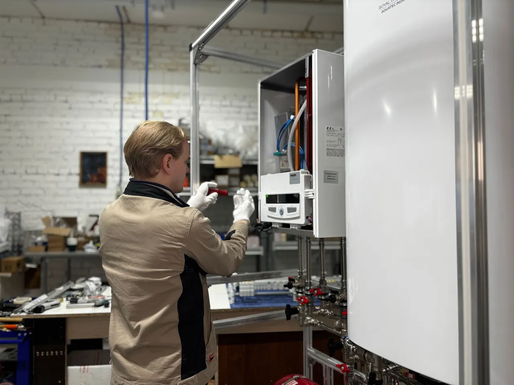
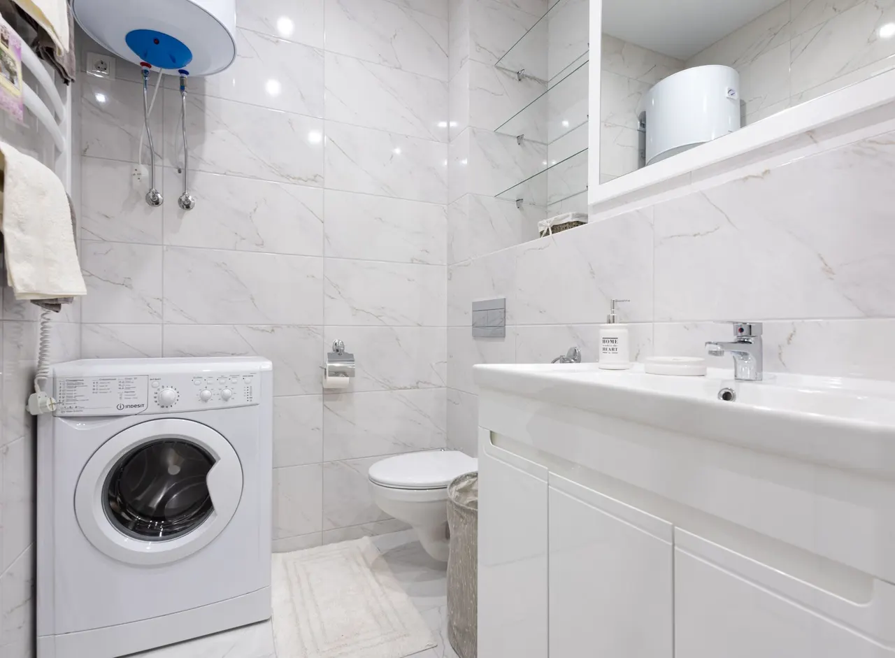

For homes
We repair and replace shower and tub fixtures in houses, condos and apartments. You get a flat quote before work starts and a test run before we pack up.
- Dripping shower valve
- Slow tub drain
- Cracked shower pan
Shower and bathtub services Arlington Heights IL homeowners call first for dripping valves, cracked pans, slow drains and full tub swaps. We work on Moen, Delta and Kohler fixtures daily, so we know which cartridges and trim kits fit your setup. Whether it is a 2 a.m. supply-line burst or a planned bathroom refresh, we diagnose the problem, quote it upfront and leave the room dry and tested.
 Shut-off checkPressure testDrain flow test
Shut-off checkPressure testDrain flow testEvery job starts with a diagnosis and a flat quote. Some repairs are simple swaps; others turn into a full tear-out. Here is what is normally included, and what we price separately so you are never guessing.

We replace worn cartridges, O-rings and mixing valves on Moen, Delta, Kohler and American Standard fixtures. Includes shut-off, disassembly, new parts, reassembly and a hot/cold test run.
We snake or hydro jet the shower or tub drain, flush it hot, and confirm flow. If the blockage is downstream, we camera the line and tell you what is actually causing the backup.
We use leak detection equipment and a pressure gauge to find hidden leaks behind tile or under the pan. Repair includes new supply lines, fittings and a pressure test before we close up.
Tear-out, subfloor inspection, new tub or pan set level, drain connection, supply lines, shut-off valves and trim. We water-test and walk you through the finished install.
New shower heads, handles, spouts and trim kits installed and sealed. We match brand and finish so the bathroom looks intentional, not pieced together.
The approach is the same for a home and a business. What changes is the access, the schedule and who needs the paperwork.

We repair and replace shower and tub fixtures in houses, condos and apartments. You get a flat quote before work starts and a test run before we pack up.
We service showers and tubs in rentals, gyms and small hotels. Work is scheduled around tenants, and we document what was repaired for your records.
A plain-language look at what Shower and Bathtub Services involves and when it is needed.
See how it worksShower and bathtub services Arlington Heights IL is a plumbing trade that repairs, replaces and maintains the fixtures, valves, drains and waterproofing around your tub and shower. That covers a dripping Moen cartridge, a Kohler tub that will not hold water, a shower pan that flexes underfoot, a Delta valve that swings hot and cold, or a drain that backs up every time you wash your hair. We handle the whole assembly, not just the visible parts.
Most calls we run in Arlington Heights start with water where it should not be. A second-floor shower valve repair Arlington Heights IL job often turns into a ceiling stain in the kitchen below. Older homes near the Miner Street Corridor still have copper pipe and original cast-iron drains, while newer builds use PEX tubing and PVC. We match the repair to what is actually behind the wall, then pressure-test before we close anything up.
Most shower and tub problems come down to a worn cartridge, a blocked drain or a failed seal.

You should know what happens from the first phone call to the final test. Here is the sequence we follow on every shower and tub job in Arlington Heights.
We ask what you see: dripping, pooling, no hot water, a drain that gurgles. That tells us whether to bring a valve kit, a drain snake or a full tear-out crew. You get a window, not a vague all-day promise.

We shut off the supply, open the access panel or trim plate, and check the valve body, supply lines and drain connection. A pressure gauge confirms whether the issue is the fixture or the line feeding it. Ten to twenty minutes, and we explain what we found.

You get a flat number before we start. If we find a cracked pan under a good-looking tile floor, we show you and re-quote. No surprise line items, no hourly creep. You decide, we work.

Most valve and drain repairs finish the same visit. Tub and shower replacements run one to two days. We protect the floor, use pipe wrench, tube cutter and PEX crimping tool as needed, and keep the work area clean as we go.

We run hot and cold, fill the tub, check the drain for leaks, and dry everything off. You get a walkthrough of what was replaced, plus a note on what to watch over the next week. Then we haul the old fixture away.

Move across a circle, or focus it and press Enter, for an illustrative thermal view of the photograph.

Used to break loose old supply connections and cut copper or PEX cleanly so new fittings seat without stress or leaks.

Snake clears hair and soap mats in the trap; the hydro jetter scours grease and scale from the branch line when snaking is not enough.

Lets us see cracks, root intrusion and bellies in the drain line so we repair the actual cause instead of clearing the same clog twice.

Confirms where water is escaping behind tile or under a pan, and verifies the repair holds pressure before we close the wall.

Used to make code-correct connections on PEX tubing or copper pipe, depending on what your home already has.
Thermal views are illustrative, generated from the photographs.
Cutting, tightening and testing on tub and shower installs, including tight access panels where hand tools will not fit.
Every tub and shower replacement is roughed in to Illinois Plumbing Code, including proper slope, venting and shut-off valve placement, so the job passes inspection the first time.
We pressurize the new supply lines and valve body and hold it long enough to confirm no drop. Only then do we close the wall or set the trim.
For repeat clogs, we camera the line before quoting. That tells us whether the fix is a cleaning, a spot repair or a section replacement, and it keeps you from paying twice.
We match Moen, Delta, Kohler and American Standard cartridges and trim to your existing fixture so the repair fits and the finish matches the rest of the bathroom.

A second-floor shower in a 1920s Scarsdale home drips into the kitchen ceiling below.
We isolate the valve, replace the cartridge and supply lines, and pressure-test the assembly. If the drain connection is also failing, we repair it in the same visit so the ceiling stays dry.
Outcome: The drip stops, the ceiling stain stops growing, and you get a written note of what was replaced.

A homeowner wants to replace a dated tub with a walk-in shower before the holidays.
We tear out the old tub, inspect the subfloor, set the new pan, run supply lines and shut-off valves, and install the trim. Tile work is coordinated so the job finishes in sequence.
Outcome: A finished walk-in shower, water-tested and ready to use, typically within two to three days.

A property manager has a unit where the shower drain backs up every few weeks.
We camera the branch and main line, find the root intrusion or scale buildup, and hydro jet the line. If the pipe is failing, we quote a spot repair or replacement.
Outcome: The recurring backup ends, and the unit stays rentable without monthly drain calls.

A Creekside homeowner notices the shower valve swings hot and cold with no warning.
We test the mixing valve, check the water heater temperature setting, and replace the failed cartridge or valve body. A pressure gauge confirms the supply is stable.
Outcome: Steady temperature at the shower head and no more scald risk for kids or guests.

A commercial building near the Arlington Heights Business District needs backflow testing and a shower valve repair in the same visit.
We test the backflow assembly, document the result, then repair the shower valve and drain in the tenant space. One trip covers both items.
Outcome: Compliance paperwork handled and the tenant shower working again, without a second scheduling headache.

Arlington Heights sits in Cook County, and its housing stock splits roughly in two. Older homes around Old Arlington Heights, Scarsdale and the Miner Street Corridor often have original copper pipe, cast-iron drains and small access panels. Newer builds in Creekside and Arlington Market use PEX tubing, PVC pipe and larger valve openings.
That matters because a shower valve repair Arlington Heights IL job in a 1925 house may need a tube cutter and soldering torch, while the same repair in a 2015 build is a PEX crimp and a cartridge swap. Winter is the busy season. Frozen pipes behind exterior shower walls are common from December through February, and we see a spike in burst supply lines after the first hard freeze.
Summer brings the opposite: hard-water scale and soap scum build up faster, and more homeowners book bathtub installation Arlington Heights projects before the school year starts. If you are searching for bathtub leak repair Arlington Heights IL, we can usually get there the same day and tell you on the phone what to shut off first.

Before: A second-floor shower in Scarsdale had dripped for months. The kitchen ceiling below showed a brown stain, and the valve handle was stiff. The homeowner had been shutting the water off at the main between showers.
After: We replaced the failed Moen cartridge and the valve body O-rings, pressure-tested the assembly, and ran the shower for fifteen minutes. The drip stopped, the ceiling stain stopped spreading, and the handle turns smoothly again.
Run the shower hot for a minute each week to keep the cartridge moving, and check under the sink for moisture every few months.
Before: A 1950s home in Old Arlington Heights had a tub that drained slower every month. Snaking helped for a week, then the backup returned. The toilet gurgled when the tub drained.
After: A sewer camera found root intrusion at a joint about twelve feet out. We hydro jetted the line and repaired the damaged section with PVC pipe. The tub now drains in under thirty seconds and has stayed clear.
Use a hair catcher in the tub drain and schedule a camera check every two years on older lines.
Before: A Creekside homeowner noticed the shower pan flexing and a soft spot near the drain. Water had reached the subfloor, and the tub surround tile was loose in two spots.
After: We removed the old pan and tub, repaired the subfloor, set a new tub level, ran new supply lines and shut-off valves, and water-tested the install. The bathroom was usable again in two days.
Wipe the pan dry after showers and check the caulk line at the floor every six months for gaps.
Most calls come down to water in the wrong place or a fixture that stopped working. Here are the ones we see most in Arlington Heights, and what happens if you wait.
A dry floor and a fixture that works when you turn it on.
A failed shower cartridge or mixing valve can be swapped in one visit. We carry Moen, Delta and Kohler cartridges on the truck, so most same-day shower valve replacement Arlington Heights IL calls finish in 90 minutes to two hours, including the test run.
We use leak detection equipment and a pressure gauge to confirm where water is escaping before we open a wall. That means fewer torn-out tiles, a tighter repair, and a written note of what we found so you know exactly what failed and why.
Hair and soap scum bind into a mat that a plunger just pushes around. We run a drain snake or hydro jetter through the trap and branch line, then flush with hot water. Most shower drain cleaning Arlington Heights IL jobs clear in under an hour and stay clear for months.
A full bathtub installation Arlington Heights job usually takes one to two days: tear-out, subfloor check, new pan or tub set, supply lines, shut-off valves and trim. We set the tub level, seal it correctly, and water-test before we call it done.
Clear records you can keep and share.
What was replaced and why
Before and after of the repair
Pressure and flow results
Simple upkeep steps for you
Most shower and tub problems are a part failure, not a fixture failure. Here is how we decide.
One part has failed and the fixture body is sound.
The fixture body or pan is cracked or corroded.
The symptom points somewhere else in the system.
A list like this tells people straight away whether you cover their street. Not listed? Call and ask: it only takes a minute.
Based in Arlington Heights and covering the places around it. Pick one for local details.
The price depends on access, fixture brand and whether the pan or tile needs work. We quote flat before we start.
The three most common causes are a worn cartridge, a failed valve body O-ring, or a cracked shower pan. In older Arlington Heights homes, we also see copper supply lines pinhole from age. We isolate the source with a pressure gauge and leak detection equipment, then repair the actual failure instead of guessing.
Yes, in most cases. If the access panel is reachable and the valve body matches a standard Moen, Delta or Kohler pattern, we complete same-day shower valve replacement Arlington Heights IL in about two hours. If tile has to be cut and re-set, we schedule the tile work separately so the repair is done right.
A standard bathtub installation Arlington Heights job takes one to two days. Day one is tear-out, subfloor inspection and setting the new tub or pan. Day two is supply lines, shut-off valves, drain connection, trim and water testing. Custom tile surrounds add time, and we tell you that upfront.
Other services from the same team.
We quote flat, protect your floors, and test every fixture before we leave. Call (224) 643-9856 and tell us what your shower or tub is doing.
Call (224) 643-9856 or email us and we will get back to you fast. Tell us what is going on and we will tell you what it takes to fix it.